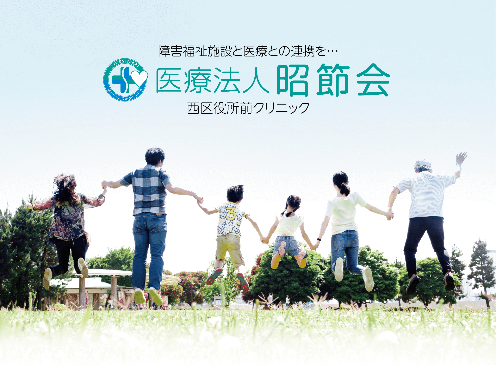
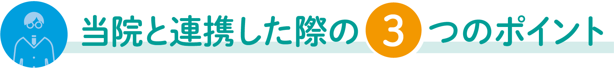
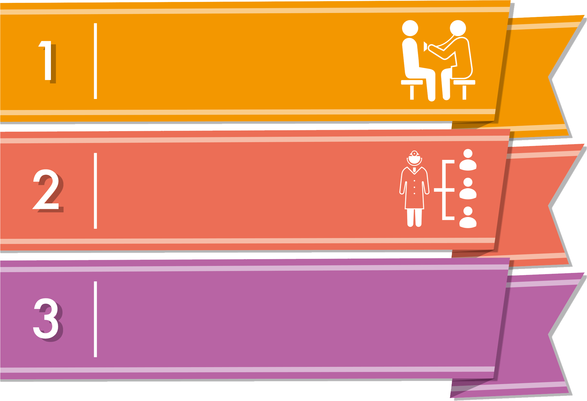
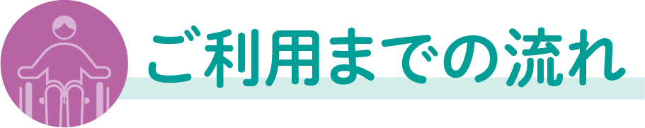
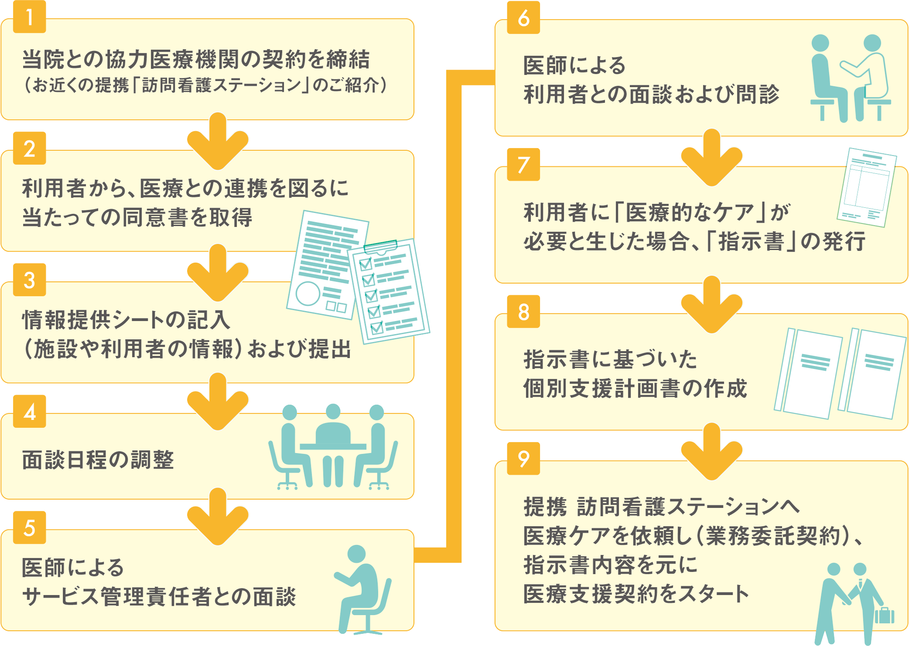
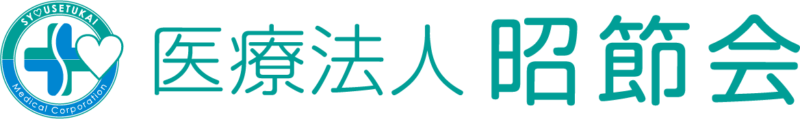

当院では、障害福祉施設の協力医療機関として、利用者一人ひとりに福祉的な支援だけではなく医療的な支援が行えるよう、
施設のサービス管理責任者や利用者の方たちとの面談を重視し日々、連携を図っております。
また、当院では、クリニックだけではなく、グループで就労支援事業や放課後デイサービス事業も運営を行っているため、
施設の立場となっても医療的なケアをおこなうことができます。

定期的に医療相談（薬や傷病のことなど）を
受けることができます。
利用者一人ひとりに対しての
医療的なアドバイスを受けることができます。
利用者対しに、「医療的なケア」が必要と判断した場合は
「指示書」を発行し提携した「訪問看護ステーション」から
医療支援を受けることができます。
（医療連携加算を取得することも可能です。）

- 面談はどのような面談を行うのですか？
- 面談もしくは、WEB面談を行っております。
-
病院拠点が大阪府となっておりますが、
他府県でも協力医療機関になることは可能ですか？ - 協力医療機関との目的がしっかりしている場合は、他県であっても協力医療機関として契約することは可能です。（ただし、当病院だけではなく、緊急時にかけつけることができる協力医療機関も必要となります。）
-
利用者一人ひとりに主治医がいるのですが、
それでも「指示書」を発行しても問題無いのですか？ - 当指示書は、利用者の方の日常生活に対して出される指示書では無く、あくまでも利用者が施設を利用するにあたって、福祉的な支援だけではなく、医療的な支援も行った方が良いと判断した場合に発行する指示書となります。
-
提携した訪問看護ステーションでないと
医療支援を受けることができないのでしょうか？ - オンライン面談ということも有り、施設の状況や利用者の経過などの報告は提携している訪問看護ステーションでないと、連携が難しいため、当病院と提携している訪問看護ステーションに限らせて頂いております。
- 毎月の料金を教えて下さい。
-
施設の状況や利用者の人数などによって、料金は変ってきます。
詳しくは、お問い合わせください。

医療法人昭節会 西区役所前クリニック
〒593-8324 大阪府堺市西区鳳東町5-461-1
TEL.072-260-3400
障害福祉等連携室 オンライン診療窓口
〒598-0007 大阪府泉佐野市上町3丁目 11-1松本ビル４階
TEL.072-464-5353 FAX.072-464-53540